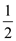
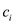
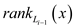

a)
The algorithm will be as follows:
Initialize the array say A that has length n such that it is true for all values, then traverse the indices of the original array. If the corresponding entry in the array A is true, swap the element at the current index with the element at the bit reversed position.
Set the entry in the array A that corresponds to the bit-reversed index equal to false.
The function is running less than n times. So, the run-time is .
1. do
2 if
3 then swap
b)
The implementation of the BIT-REVERSED-INCREMENT procedure is as follows:
Do the bit reversed increment which will add a one to the left most position in which all carries will go to left instead of right.
BIT – REVERSED –INCREMENT
1. let y be 1 followed by k-1 zeros.
2. while ()
3. do
4.
5.
6. end while
7. return ( )
This algorithm will take amortized time. So, take a binary counter and bit reversed counter and swap the values of the two counters and perform increment.
If swapping has already been done, then do not swap.
The total running time of BIT – REVERSED –INCREMENT s is.
c)
If a word is shifted left or right by one bit in unit time, then it is still possible to implement O(n) time bit reversal permutation in the following way:
BIT – REVERSED –INCREMENT
1.
2. count
3. while
4. do Shifts value of x by only 1 bit left.
5. count count + 1
6.
7. while (count > 0)
8. do Shifts value of x by only 1 bit right.
9. count = count – 1
still holds.
In this algorithm, only single shifts to the right or left are used.
a.
Consider the following algorithm to build an x rooted tree which is balanced:
HALF-BALANCE-TREE
1. Declare an array.
2.
3.
4. INSERT-NODE
5. if
6. return.
7. HALF-BALANCE-TREE
8. HALF-BALANCE-TREE
Time complexity:
In above algorithm the 2nd line call the INORDER-TRAVERSAL procedure to determine the in-order which takes time. The HALF-BALANCE-TREE procedure recursively call itself. Therefore its recurrence becomes:
Thus, time complexity becomes.
b.
In n-node  -balanced
binary tree the searching is done with the recursive calls. At any
point the sub-tree having i nodes make recursive call the
sub-tree having nodes.
Therefore the recurrence becomes:
-balanced
binary tree the searching is done with the recursive calls. At any
point the sub-tree having i nodes make recursive call the
sub-tree having nodes.
Therefore the recurrence becomes:
Where, is the
constant, therefore total time taken by -balanced
binary tree in searching is.
c.
It is already given that potential of tree is:
Where, , is the
absolute difference between size of left and right sub-tree that is
why the binary search tree has non-negative potential. The
potential is non-negative because is the
absolute difference between size of left and right
sub-tree.
, is the
absolute difference between size of left and right sub-tree that is
why the binary search tree has non-negative potential. The
potential is non-negative because is the
absolute difference between size of left and right
sub-tree.
It is already known that in balanced binary search tree the size of left and right sub-tree is less than the size root x.
and,
Now, prove  in
balanced binary search tree by contradiction. At first
suppose
.
in
balanced binary search tree by contradiction. At first
suppose
.
This implies …… (1)
It is already known that sum of size of left sub-tree and right sub-tree is one less than size of its root tree.
Now, move size of left tree to RHS to determine value of
 …… (2)
…… (2)
Now, put size of right sub-tree in equation (1).
Move 2 to RHS
But, according to condition of -balanced
search tree , therefore
it’s a contradiction.
, therefore
it’s a contradiction.
This implies.
The potential is sum of all nodes over, but according to above contradiction it is prove that there is no such node.
Therefore, in balanced search tree
Suppose there is x-rooted m-node tree which is not
-balanced.
This mean that it violets the property of -balanced
tree.
Suppose size of left tree violets the property
…… (3)
It is already known that the sum of size of left sub-tree and right sub-tree is one less than size of its root tree.
Using equation (3)
Take as common
Remove -1 from RHS
The difference in size of left and right sub-tree that is becomes:
It is m-node tree therefore value of becomes m
Take m as common
…… (4)
Since,
Now, use equation (4)
So, when m-node is again rebuild into balanced tree then the potential at each node including root node must be 0. Therefore potential change must be at least.
If value of constant c must be greater than then the
potential will get reduce to m. Since, the potential to
rebuild a tree is m unit, the amortized cost of rebuilding
is 
Therefore, the value of constant must be .
e.
In n-node -balanced
BST the total amortized cost of insert and delete operation is the
sum of cost of insert or delete operation and the potential
difference between two states.
The cost of insert or delete operation is same as the cost of
searching a node in n-node -balanced
BST.
As per part (b), the cost of searching the node is. Therefore the actual cost of insert and delete operation is also.
When a node x is inserted or deleted in tree then changes on those ith node which comes in path from node x to root. When insertion is occurred then is increased by 1.Theof all other remaining node get unchanged.
According to part (b), the number of nodes to the location where x is inserted is. Therefore the change in potential becomes:
Remove the constant c
Therefore the total amortized cost of insertion or deletion:
SELF ORGANISING LISTS BY MOVE-TO-FRONT
By the name it suggests it is a type of list in which self-organizing is done in such a way that its elements are reordered on the basis of its heuristics such that the average access time improves. The main purpose of this method is to increase efficiency of the sequential search. And it is done by forwarding the items towards the head list which are frequently accessed. In the best case it takes the constant time for the accessing of element. It can be implemented easily by the linked-list. It is efficient in insertion and memory allocation of the random node but inefficient in its accesses.a. Suppose there is a list of n-elements and an access sequence of keys to find elements, in order. In order to find any specific element in list, traverse the list from beginning till element is not found.
The cost of accessing the sequence  using
heuristic is denoted by and the
symbol m is for the number of access in.
using
heuristic is denoted by and the
symbol m is for the number of access in.
Now assume that there is a list L having n elements.
The sequence of operations
which is provided one at a time and for each of the operations the
heuristics H must execute the operation immediately without
considering the future operations and it also look over the whole
sequence before.
The worst case for Heuristic H on an access sequence is the access of the last (nth) element of list.
It is already mentioned that the cost of kth element of list is k.
Therefore the cost to access the nth element is n.
The cost of sequence is the summation of cost of each access. The numbers of access in sequence are m.
Hence, the cost of accessing the worst case using Heuristics H is
b. Move -to-front-Heuristics:
In this first find the element x in list and then advances to the first position in the list. Here is called as the rank for the element x in the list L. The cost of accessing sequence is denoted by  using the move-to-front heuristics. Explaining with the help of example that is if the element x is at 2nd position in the list then its rank is 2. It is mentioned that the cost of finding xth element of list is x which is equal to the rank of the element in the list which is denoted by.
In the move-to-front heuristics after the accessing of the element x it is moved towards the front of L by the transpose operations.
Therefore, the cost of accessing the key element of list is the sum of cost of finding xth element in list and cost of moving it to first position of list.
The cost of finding xth element in list = x or
The cost of moving xth element of list to first is always one less than its rank like moving 4th element of list to first position requires 3 movements (4 to 3), (3 to 2) and (2 to 1).
Therefore,
The cost of moving xth element of list at first position=
The cost of accessing the key element of list that is
Hence the condition for the cost is .
c. The list after accessing of with the
move-to-front technique is denoted by  and
after the heuristics H.
and
after the heuristics H.
Correspondingly the cost of accessing the element is denoted by for the move-to-front technique and by the heuristics H and it is also provided that the number of transpose is by the heuristics H.
Since the cost for the ith operation in the move-to-front technique is,
for the accessing of the element x.
The list is reordered by transposing (changing the position of element) the element of list. The cost of one transposition is one unit.
It is already mentioned that the cost of finding xth element of list is x which is equal to the rank of the element in the list which is denoted by.
Therefore, the cost for accessing the xth element of list by the heuristics H is the sum of cost of accessing the xth element and number of transposition.
Where x = cost of accessing xth element.
= number of transposition.
The cost of accessing the xth element is equal to the rank of xth element which is denoted by 
Hence proved
d. Inversion:
An inversion in the list for a pair
of element y and z has done in such a way that
z is preceded by y in the list and
y is preceded by z in the list and the
number of inversion is denoted by . The
potential function
. The
potential function  maps list
with number of inversions.
maps list
with number of inversions.
Since
And
The list is reordered by transposing (changing the position of element) the element of list. The cost of one transposition is one unit.
And as the transpose used to either create or destroy the 1 inversion so the change in potential function is denoted by the symbol which is equal to.
e . To understand the effect of the access sequence on the potential function, define or classify the elements into four sets which are as follows:
Where as
implies that elements come before x in list .
implies that elements come after x in list .
Now considering the above sets it implies that the elements of list are divided into four sets. Some element of list which came before x are in set A and remaining elements of list which came before x are in set B.
Therefore the total elements of list before x are the sum of set A and set B that is
The above sum of set A and B does not contain element x.
Therefore,
Rank that is of element is the position of x element in list.
For example the rank of 6th element in list is 6 or the number of elements till 6th element including itself.
Hence,
Or
Similarly, all the elements of list which come before x are the sum of set A and set C.Therefore
Or
When an element is accessed for a given operation, then,
|
|

|
|
|
|
|
|
Now considering the above access operation and its effect at the conclusion that
And
.
f. Considering the part
(e) of the problem, the condition for
the change in potential as when using move-to-front technique the
x is moved forward that is in the front, it creates the
inversions which is equal to  and during
the process inversions
are destroyed. And the transpose for the heuristics in which the
inversions created is less than equal to 1.
and during
the process inversions
are destroyed. And the transpose for the heuristics in which the
inversions created is less than equal to 1.
So using the concept of the above discussion the change in potential is
The amortized cost is defined as the sum of the cost of the access sequence and the change in the potential function which can be represented for the ith operation with the move-to-front technique as
g. Proof of amortized cost of access being bounded by
In this problem amortized cost defined in the part (f) is as follows,
From part (b) and ( f),
Put and
From part (e),
Put
Add on right hand side of the equality
Put
As
Hence proved
h. Considering the part (g) of the problem the condition is as follow:
Where, is the cost of accessing using heuristics.